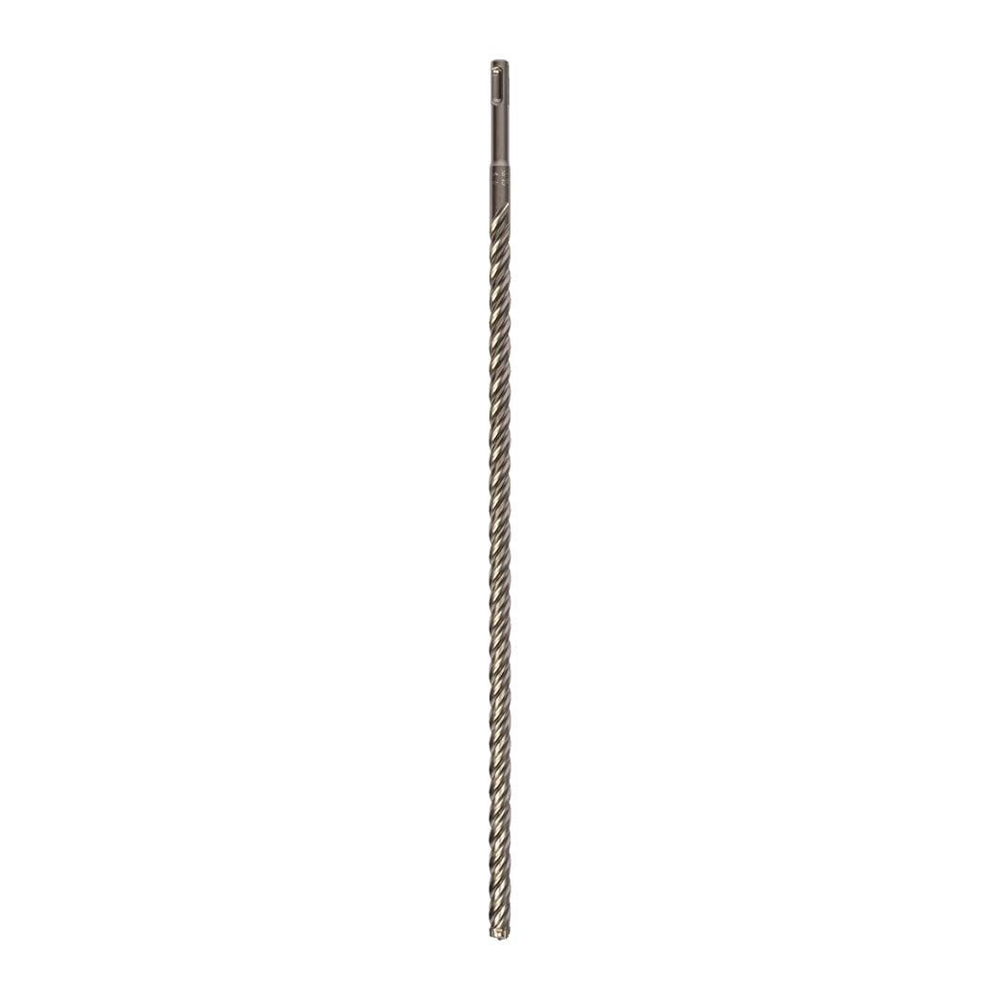

4932352035

The Milwaukee MX4™ SDS-Plus drill bit is engineered for the toughest applications, featuring innovative fully welded solid carbide tip technology (up to ⌀ 20 mm) for maximum durability in rebar and unmatched drilling speed in concrete.
4-Cutter solid carbide tip: Enhanced geometry with a sharp centering tip, rebar guards, and new dust grooves delivers clean starts, precise holes, and maximum life when drilling through rebar - even under extreme jobsite conditions.
Optimised flute design with reinforced core: A thicker core combined with alternating SPEED and HEAVY-DUTY spirals ensures fast debris removal, reduced friction, and superior stability in demanding applications.
Convex shank for maximum energy transfer: The convex shank end optimises energy transfer from tool to tip, boosting impact force, drilling efficiency, and jobsite productivity.
One-Piece slotted carbide tip for ⌀ > 20 mm: For large-diameter concrete drilling, this design offers exceptional strength, extended bit life, and break resistance in heavy-duty use.
PGM certified: Meets industry standards for precision and safety, making it the ideal choice for anchor setting.
Made in Germany: Manufactured to the highest standards for uncompromising quality, reliability, and performance on every jobsite.
Made in Germany.
| ¹ Pre-drill with a short drill bit of the same diameter. | ✔ |
| Diameter (mm) | 12 |
| Pack quantity | 1 |
| Total length (mm) | 450 |
| Working length (mm) | 400 |